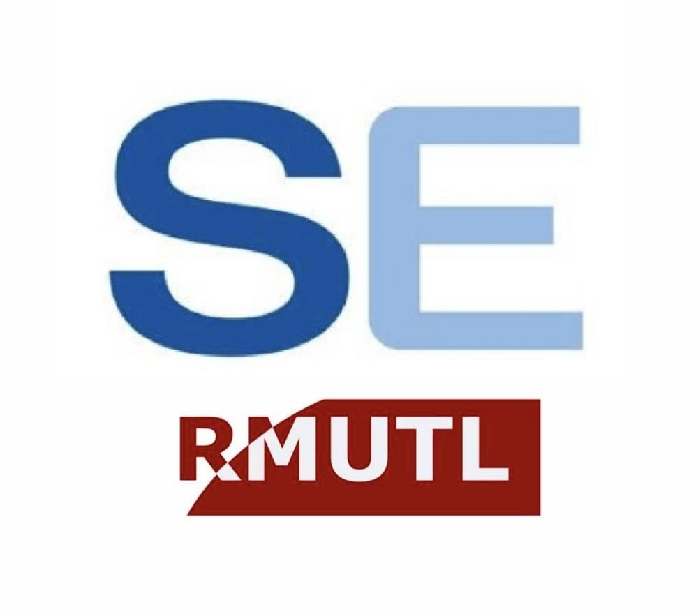
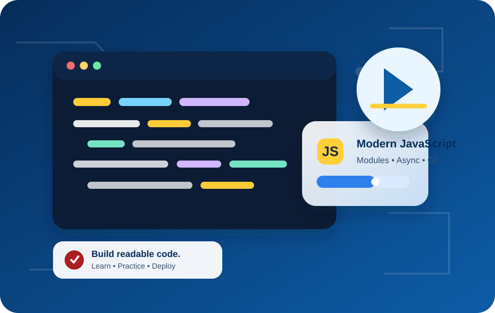

ENGSE203Computer Programming for Software Engineer • ชั้นปีที่ 2
Week 02 • Modern Programming Foundation
Modern JavaScript
ที่เขียนง่าย ขยายได้
และส่งมอบได้จริง
ES6+ • ES Modules • Async/Await • Error Handling • npm Scripts • Git Workflow • GitHub Pages
CLO1: เข้าใจการทำงานเว็บสมัยใหม่
CLO2: ใช้ JavaScript + tools อย่างเป็นระบบ
A2: LAB 2 รายบุคคล
💡ภารกิจวันนี้: สร้าง “ENGSE203 Learning Dashboard” ที่แบ่ง module, โหลดข้อมูลแบบ async, จัดการ error, build และเตรียม deploy ผ่าน GitHub Pages

คำถามนำ: ถ้าไฟล์ JavaScript มี 1,000 บรรทัด คุณจะทำให้ทีมอื่นอ่านและแก้ไขได้อย่างไร?กด Next / ใช้ปุ่มลูกศร →
สัปดาห์ที่ 2: จาก Week 1 สู่ Modern JavaScriptเชื่อมเครื่องมือที่เตรียมไว้ เข้ากับการสร้างเว็บที่มีโครงสร้าง
แผนที่ความรู้ของสัปดาห์นี้
จาก “เขียนโค้ดให้ทำงาน” → “ออกแบบโค้ดให้พร้อมพัฒนาเป็นระบบ”
What you already have
จาก LAB 1
- Node.js, npm, VS Code และ Git พร้อมใช้
- สร้าง repository และ push ครั้งแรกได้
- รู้จัก npm script สำหรับรันโปรแกรม
Today
วันนี้ต่อยอดอะไร
- จัดโค้ดด้วย ES Modules
- โหลดข้อมูลอย่างเป็น asynchronous
- ใช้ branch/PR/deploy เพื่อส่งงาน
Why it matters
ทำไมต้องเรียนก่อน React
- React ใช้ modules, state และ async data
- วิธีคิดนี้ย้ายต่อไปยัง API/Database ได้
- ทุกอย่างเป็นหลักฐานใน GitHub ได้
Think–Pair–Share: ถ้าโปรเจกต์มีเพียงไฟล์เดียว จะเกิดปัญหาอะไรเมื่อโปรเจกต์โตขึ้น?คำตอบ: หาโค้ดยาก, แก้ไขชนกัน, ทดสอบยาก และขยายยาก
1.1 Modern JavaScript: ES6+เลือก syntax ที่ทำให้เจตนาของโค้ดชัดเจนและลดการทำงานซ้ำ
เขียนสั้นลง แต่ชัดขึ้น
เริ่มจาก const เป็นค่าเริ่มต้น • let เมื่อค่าต้องเปลี่ยน • หลีกเลี่ยง var
1
const / letบอกขอบเขตและความตั้งใจของตัวแปรชัดเจนกว่า var
2
Destructuringดึงค่าที่ต้องใช้จาก object/array โดยไม่เขียนซ้ำ
3
Spread / Restสร้างข้อมูลใหม่และรวมข้อมูลโดยไม่แก้ข้อมูลต้นฉบับโดยไม่จำเป็น
4
Array methodsใช้ map, filter, reduce จัดการข้อมูลเป็นลำดับ
Try it — code runs in this browser
Ready. Press “Run code”.
อ่านผลลัพธ์ให้เป็น
🔍filter คัด task ที่ยังไม่เสร็จ — ไม่แก้ array เดิม
✳️map + spread สร้าง object ใหม่ จึงไม่สร้างผลข้างเคียงต่อข้อมูลต้นฉบับ
➕reduce สรุปรวมเวลาให้อยู่ในตัวแปรเดียว
⚠️คำถามตรวจตนเอง: ฟังก์ชันนี้รับข้อมูลอะไร คืนค่าอะไร และทำหน้าที่เดียวหรือไม่?
Quick question: เมื่อไรควรใช้
const และเมื่อไรควรใช้ let?แนวตอบ: ใช้ const เป็นค่าเริ่มต้น ใช้ let เมื่อมีการกำหนดค่าใหม่1.2 ES Modulesแยกโค้ดตามความรับผิดชอบ: API, logic, UI และ orchestration
หนึ่งไฟล์ไม่ใช่หนึ่งระบบ
ES Modules ทำให้คนอ่านโค้ดรู้ได้ทันทีว่า ไฟล์นี้ควรรับผิดชอบอะไร
Click each file to inspect
src/api.js — data access boundary
How the pieces collaborate
Data flow
main.js→api.js→utils.js→ui.js
exportส่งเฉพาะสิ่งที่ module อื่นต้องใช้importระบุ dependency ให้ชัด- entry point บนเว็บต้องใช้
<script type="module">
ปัญหาที่เจอบ่อย: เปิด
index.html ด้วย file:// แล้ว module/fetch ทำงานไม่เหมือนเว็บจริงทำที่ถูก: ใช้ local server เช่น npm run dev1.3 Async/Await + Error Handlingเว็บที่ดีไม่ใช่แค่โหลดข้อมูลได้ แต่ต้องบอกผู้ใช้ได้ว่าเกิดอะไรขึ้น
ข้อมูลอาจช้า หาย หรือผิดพลาดได้
จัดการสถานะ loading → success / error → finally ให้ผู้ใช้ไม่เจอหน้าจอว่าง
Async state simulator
• Ready to simulate
• await: waiting for data
• response.ok: verify success
• catch: user-friendly error
• finally: cleanup always runs
async function loadDashboard() { try { setMessage("loading"); const response = await fetch(url); if (!response.ok) { throw new Error("HTTP failed"); } const tasks = await response.json(); renderDashboard(tasks); } catch (error) { setMessage("error", error.message); } finally { finishLoading(); } } // fetch resolves even on 404/500 → check response.ok
⌛
Loadingเริ่มคำขอและบอกผู้ใช้ว่าโปรแกรมกำลังทำงาน
✓
Successโหลดข้อมูลสำเร็จ แล้ว render UI ตามข้อมูลจริง
!
Errorแสดงข้อความที่เข้าใจได้ และไม่ปล่อยหน้า blank
↺
Finallyเก็บกวาดงานชั่วคราว เช่น ปลดปุ่มหรือซ่อน loading
ชวนคิด: ถ้าไม่ตรวจ
response.ok แล้ว 404 จะเข้า catch ทันทีหรือไม่?คำตอบ: ไม่เสมอไป — fetch resolve ได้ จึงต้องตรวจเอง1.4 npm Scriptsทำงานซ้ำ ๆ ให้เป็นมาตรฐานเดียวกันผ่าน package.json
คำสั่งสั้น แต่ workflow ชัด
แทนที่จะจำคำสั่งยาว ๆ ทุกคนในทีมสามารถใช้ npm run <script> แบบเดียวกัน
Interactive terminal
เลือก script เพื่อดูบทบาท
Console output
npm run dev
$ npm run dev VITE v6.x.x ready in 300 ms ➜ Local: http://localhost:5173/ ➜ press h + enter to show help
package.json ที่ใช้ใน LAB 2
{
"scripts": {
"dev": "vite",
"build": "vite build",
"preview": "vite preview",
"check": "node scripts/check-project.mjs"
}
}หลักคิด
- script เป็น สัญญาร่วม ของผู้พัฒนาและผู้ตรวจงาน
- บันทึกผล
check/buildเป็นหลักฐานว่าโครงงานพร้อมส่ง - ก่อน deploy ควร preview build output เสมอ
ลองคิด: ถ้าเพื่อนในทีมรันคำสั่ง build คนละแบบ จะเกิดปัญหาอะไร?แนวตอบ: ผลลัพธ์ไม่สม่ำเสมอ ตรวจซ้ำยาก และ onboarding ยาก
1.5 Git Workflowแม้เป็นงานรายบุคคล ก็ฝึกการทำงานแบบที่ใช้จริงในทีม
ทำงานเป็นขั้น แล้วให้ Git เล่าเรื่องได้
main → feature branch → meaningful commit → pull request → merge
Press through the workflow
$ git switch main Ready to create a feature branch.
Quality signals
สิ่งที่ผู้สอน/เพื่อนร่วมทีมควรเห็น
- ชื่อ branch สื่อเป้าหมาย:
feature/lab02-dashboard - commit บอกการเปลี่ยนจริง:
feat: add async task loader - PR อธิบายฟีเจอร์ วิธีทดสอบ และ URL ที่เกี่ยวข้อง
ไม่ควรทำ: branch ชื่อ test/new, commit ชื่อ update/fix โดยไม่บอกสิ่งที่เปลี่ยนเป้าหมาย: ทำให้กระบวนการพัฒนาตรวจสอบย้อนหลังได้
1.6 GitHub Pagesเปลี่ยน source code เป็นเว็บ static ที่คนอื่นเปิดดูและตรวจงานได้
Build → Docs → Deploy
LAB 2 ใช้ Vite build output ที่ docs/ และ publish จาก main /docs

Interactive deployment checklist
ก่อนกดส่งงาน ต้องครบทุกข้อ
0 / 5 ขั้นตอนพร้อม deploy
ตัวอย่าง vite.config.js
import { defineConfig } from "vite";
export default defineConfig({
base: "/engse203-lab02-<student-id>/",
build: { outDir: "docs", emptyOutDir: true },
});Privacy check
- GitHub Pages อาจเปิดเผยงานเป็นสาธารณะตามการตั้งค่าบัญชี/องค์กร
- ห้าม deploy token, password, ไฟล์
.envหรือข้อมูลส่วนบุคคลที่ไม่จำเป็น - Pages เป็นหลักฐานการใช้งานจริง ไม่ใช่เพียงภาพหน้าจอ
ปัญหาพบบ่อย: 404 หรือ asset หายตรวจ base path, docs/ อยู่บน main และ Pages ตั้ง source ถูกต้อง
LAB 2 — Cross-platform workflowiMac M1/macOS ในห้อง และ Windows 11 + Ubuntu 24.04 LTS (WSL2) ที่บ้าน
ต่างระบบ แต่ใช้ workflow เดียวกัน
ให้ทำงานหลักผ่าน VS Code Integrated Terminal และใช้ Node.js/npm/Git ใน environment ที่ถูกต้อง
macOS / iMac M1
พื้นที่ทำงานที่แนะนำ: ~/Documents/ENGSE203
mkdir -p ~/Documents/ENGSE203
cd ~/Documents/ENGSE203
code .Terminal ใน VS Code มักเป็น zsh
↔
▣ Windows 11 + WSL2
พื้นที่ทำงานที่แนะนำ: ~/projects/ENGSE203
mkdir -p ~/projects/ENGSE203
cd ~/projects/ENGSE203
code .เปิดโครงการใน Ubuntu WSL — ไม่ควรทำงานใน C:\ โดยตรงสำหรับ LAB นี้
คำสั่งตรวจพร้อมกัน
node -v npm -v git --version git config --global user.name git config --global user.email ssh -T git@github.com
สิ่งที่ต้องสังเกต
- Windows: status bar VS Code ควรแสดง WSL: Ubuntu
- ใช้
pwdแล้วต้องเห็น path ใน home directory - หลังติดตั้ง tool ใหม่ ให้ปิด–เปิด terminal ก่อนเช็ก version
แนวปฏิบัติร่วม: ใช้ VS Code Integrated Terminal ลดความต่างของหน้าจอและคำสั่งภาพประกอบใน
images/cross-platform.svgLAB 2: ENGSE203 Learning Dashboardงานรายบุคคล — ส่ง source code, PR และเว็บไซต์ GitHub Pages
สร้างเว็บ dashboard ด้วย Vanilla JavaScript
เน้น architecture และ workflow ไม่ใช่แค่หน้าตาเว็บ
Minimum requirements
ฟีเจอร์ที่เว็บต้องมี
- โหลด task จาก JSON แบบ async (แนวคิดเดียวกับ
fetch) - search / filter ด้วย title, topic และ status
- summary card: total, to do, in progress, done
- loading / success / error state และ test ด้วย
?simulateError=1 - ES Modules ขั้นต่ำ
api.js,utils.js,ui.js,main.js
Submission evidence
สิ่งที่ต้องส่งผ่าน LMS
Repository URLชื่อ engse203-lab02-<student-id>
GitHub Pages URLเว็บไซต์เปิดได้จริงหลัง deploy
Pull Request URLfeature/lab02-dashboard → main
README + screenshotsnormal state + error state + references/AI assistance
🧪ทดสอบก่อนส่ง:
npm run check → npm run build → npm run previewไม่รับ ZIP เว้นแต่ผู้สอนระบุเป็นกรณีพิเศษ — ผู้สอนต้องตรวจ source, history, PR และ deployA2: LAB 2 • 3 คะแนน
LAB 2 — Step-by-step implementationภาพรวมเส้นทางจาก repo ว่าง ไปยังเว็บที่ deploy แล้ว
ทำตามลำดับนี้ แล้วไม่หลงทาง
แยก “การสร้างงาน” ออกจาก “การส่งมอบงาน” อย่างชัดเจน
1
Repository + branchสร้าง repo ว่าง → clone ด้วย SSH → git switch -c feature/lab02-dashboard
2
Vite + filesnpm create vite@latest . -- --template vanilla → install → จัด src/ และ public/data/
3
Modulesเขียน api/utils/ui/main แยกความรับผิดชอบและเชื่อมด้วย import/export
4
Async UIแสดง loading, success, error และทดสอบ error state ด้วย URL parameter
5
Check + buildเพิ่ม npm scripts → run check → build output ไป docs/ → preview
6
PR + Pagescommit/push → open PR → merge main → Pages from main /docs
คำสั่งสำคัญระหว่างพัฒนา
npm run dev npm run check npm run build npm run preview git status git add . git commit -m "feat: build async learning dashboard" git push -u origin feature/lab02-dashboard
Peer review 2 นาที
- ลอง search/filter จากหน้าเว็บเพื่อน
- ลองเปิด
?simulateError=1แล้ว UI ยังสื่อสารชัดหรือไม่ - ดู PR ว่ามีคำอธิบายสิ่งที่ทำและวิธีทดสอบหรือไม่
หลักคิด: ทุกขั้นควรมีผลลัพธ์ที่ตรวจได้ — ไม่ใช่ทำเสร็จเฉพาะในเครื่องSource + documentation + history + deployed site
A2: LAB 2 — Rubric & submissionคะแนนสะท้อนทั้งคุณภาพโค้ด การทดสอบ และการส่งมอบที่ตรวจได้
3 คะแนน: ดูอะไรบ้าง?
เขียนได้ + อธิบายได้ + ส่งมอบได้ = งานที่ใช้ต่อในรายวิชาถัดไปได้
| เกณฑ์ | คะแนน |
|---|---|
| Modern JavaScript & ES Modules | 0.80 |
| Async/Await & Error Handling | 0.80 |
| npm Scripts & Build | 0.40 |
| Git Workflow | 0.50 |
| GitHub Pages & Documentation | 0.50 |
| รวม | 3.00 |
Before you submit
Checklist แบบนักพัฒนา
- main branch run/build ได้จริงและไม่ commit
node_modules - ไม่มี token, password,
.envหรือข้อมูลส่วนตัวที่ไม่จำเป็น - README บอกวิธี run, Pages URL, screenshot normal/error และ references/AI assistance
- repository, Pages และ PR เปิดให้ผู้สอนเข้าถึงได้ตามสิทธิ์ที่กำหนด
คำถาม: เพราะเหตุใดการส่งแค่ ZIP จึงไม่เพียงพอสำหรับวิชานี้?คำตอบ: ตรวจ history, branch/PR, การรันจริง และการ deploy ไม่ได้
แก้ปัญหาอย่างเป็นระบบอ่าน error ให้ครบ → แยกจุดผิด → สร้างกรณีเล็ก → แก้และทดสอบซ้ำ
เมื่ออะไรไม่ทำงาน อย่าเดา
ใช้หลักฐานจาก Terminal, Browser DevTools, Git status และ URL เป็นจุดเริ่มต้น
Node/npm ไม่อยู่ใน shell ที่ใช้
Windows อาจเปิด PowerShell แทน Ubuntu WSL หรือเพิ่งติดตั้งแล้ว terminal เดิมยังไม่เห็น path ใหม่
node -v && npm -vเปิดไฟล์ด้วย file:// หรือ path ไม่ตรง
ใช้ Vite dev server และอ้าง path ผ่าน base path ของโครงงาน
npm run devbase path หรือ docs/ ไม่พร้อม
ตรวจ repository name, vite.config.js, build ล่าสุดบน main และ source main /docs
npm run buildmodule path หรือ script type ผิด
ใช้ <script type="module"> และ relative import เช่น ./utils.js
import { fn } from "./utils.js";SSH key ยังไม่เชื่อม GitHub
กลับไปตรวจ key, ssh-agent และการเพิ่ม public key ในบัญชี GitHub
ssh -T git@github.com.gitignore ไม่ครอบคลุม
เพิ่ม node_modules/ และเอาออกจาก Git index ก่อน commit ใหม่
git rm -r --cached node_modulesDebug checklist: Read → Locate → Minimize → Fix → Retestเก็บ error message/URL/commit ไว้ใช้ขอคำปรึกษาได้เร็วขึ้น
สรุป + Active Learningทบทวนแนวคิดสำคัญก่อนลงมือทำ LAB 2
เขียนโค้ดให้ทันสมัย
ส่งงานให้ตรวจได้
และอธิบายสิ่งที่ทำได้
เป้าหมายคือความพร้อมสำหรับ React, API และ Full-Stack ในสัปดาห์ถัดไป
Question 1 — click one answer
เหตุใดต้องตรวจ response.ok หลังเรียก fetch?
เลือกคำตอบเพื่อดูเหตุผล
Question 2 — click one answer
เหตุผลที่ LAB 2 ต้องใช้ feature branch + Pull Request คืออะไร?
เลือกคำตอบเพื่อดูเหตุผล
const/let, destructuring, spread และ array methods ช่วยทำให้โค้ดอ่านง่ายและลดผลข้างเคียง
api / utils / ui / main ทำให้แต่ละไฟล์มีหน้าที่ชัดและทดสอบง่าย
Loading, success, error และ finally คือประสบการณ์ผู้ใช้ที่ต้องออกแบบ
npm scripts + Git workflow + GitHub Pages ทำให้ผลงานรัน ตรวจ และส่งมอบได้จริง
Exit ticket: วันนี้คุณเข้าใจ async/await มากขึ้นอย่างไร? ส่วนใดของ LAB 2 ที่ต้องการความช่วยเหลือ?Next: Week 3 — UI/UX, HTML/CSS Responsive, Event, Form และ React.js